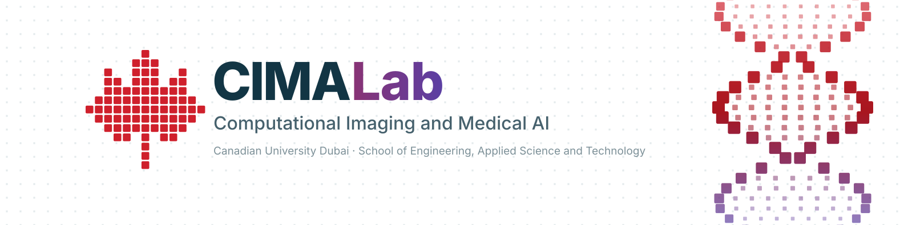

Desktop AI Supercomputer
Dedicated AI development and inference platform.
- Designed for rapid experimentation and model deployment
- Supports advanced biomedical AI workflows
CIMA Lab combines dedicated AI computing with high-memory professional workstations, GPU acceleration and research-focused visualization. This infrastructure supports the complete workflow from biomedical data preparation and model development to evaluation and interpretation.

The machines behind the volume electron microscopy pipeline and the dementia models: one platform for fast experimentation, two workstations for training and large volumes, and displays for imaging and monitoring.
Dedicated AI development and inference platform.
Two workstations available.
Suitable for imaging, dashboards and model monitoring.
Graduate and undergraduate research assistants run their projects on these machines. If you want to join a project, see the open positions or contact the lab.